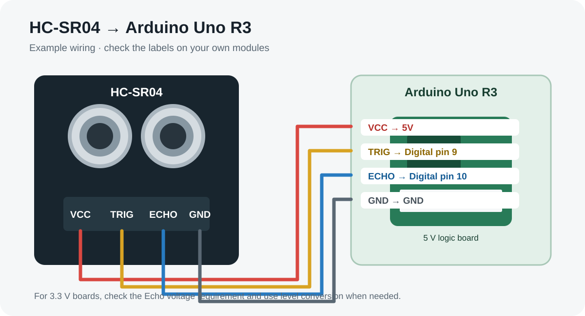
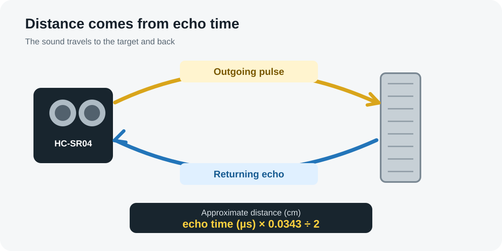
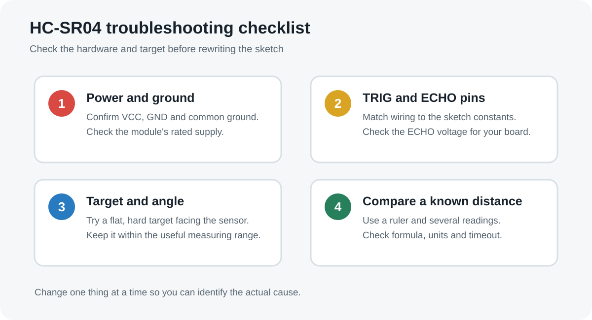

The HC-SR04 ultrasonic sensor helps an Arduino estimate how far away an object is without touching it. It sends a short burst of high-frequency sound and measures how long the echo takes to return. This guide covers the four pins, wiring, distance formula, sample code and common fixes when readings do not look right.
If you are new to distance sensing, start with our ultrasonic sensor range and distance formula guide. For the board setup itself, see the Arduino Uno R3 beginner's guide. To compare the main sensor types, see our Arduino sensor guides. This article focuses specifically on the HC-SR04 module.
1. HC-SR04 specifications at a glance
| Property | Typical module specification | Practical note |
|---|---|---|
| Operating supply | Typically 5 V DC | Check the documentation for your exact module. |
| Ultrasonic frequency | About 40 kHz | Above the normal range of human hearing. |
| Nominal measurement range | About 2–400 cm | Real results vary by target and environment; this is not a guarantee for every object. |
| Interface | TRIG input and ECHO output | Use the pin labels on your board, which may vary in layout. |
| Number of pins | 4 | VCC, TRIG, ECHO and GND. |
IMPORTANT
The 2–400 cm figure is a common nominal specification, not a promise of reliable readings at every distance. Soft, narrow, angled or irregular targets may reflect too little sound back to the receiver.
2. HC-SR04 pinout and Arduino Uno wiring

The module has four pins. With a typical 5 V HC-SR04 and Arduino Uno R3, one example connection is shown below. Check the labels printed on your own board before powering it.
| HC-SR04 pin | Connect to Arduino Uno | Purpose |
|---|---|---|
| VCC | 5V | Powers the module. |
| TRIG | Digital pin 9 | Arduino sends a short trigger pulse. |
| ECHO | Digital pin 10 | Module outputs a pulse whose duration represents echo time. |
| GND | GND | Provides the common ground reference. |
These pin numbers are examples; the sketch and wiring must agree. The Echo output on a typical HC-SR04 is a 5 V logic signal. That is suitable for a classic 5 V Arduino Uno, but use an appropriate level shifter or divider when connecting it to a 3.3 V-only board such as many ESP32 variants.
3. How does the HC-SR04 work?

When the Arduino sends a trigger pulse, the module emits a brief burst of ultrasonic sound, typically around 40 kHz. The sound travels through the air, reflects from a target and returns to the receiver. The module then holds the ECHO signal high for a period related to the round-trip travel time.
The Arduino measures that pulse duration. Since sound must travel to the object and back, the calculation divides the total travel distance by two. A longer echo time generally means the object is farther away.
4. HC-SR04 range and measurement accuracy
The common advertised range is approximately 2–400 cm. In practice, usable range depends on the sensor version, target material, target size, angle, nearby surfaces, temperature and background noise. Treat the rated range as a reference, then test the actual target and mounting setup. For a broader explanation of ultrasonic sensor range and distance measurement, read our beginner guide.
- Target angle: A surface tilted away from the sensor can reflect sound away from the receiver.
- Soft material: Fabric, foam and other sound-absorbing surfaces can produce weak echoes.
- Small targets: A narrow object may not reflect enough energy back to the two transducers.
- Very close objects: The module needs time to transmit and receive a valid echo; objects closer than its rated minimum may give unreliable results.
- Environment: Temperature changes the speed of sound slightly, so precision applications may need compensation.
Do not describe every HC-SR04 as accurate to a guaranteed ±3 mm under all conditions. Repeatability and accuracy depend on the module, test setup and target. Validate measurements against a ruler or another trusted reference across the distances that matter for your project.
5. HC-SR04 distance formula
Use the echo pulse duration to estimate distance. If the measured round-trip time is in microseconds and the speed of sound is approximated as 0.0343 cm per microsecond at around room temperature, calculate:
distance_cm = echo_time_us * 0.0343 / 2;The division by two matters because the pulse travels from the sensor to the target and back. For example, an echo duration of 1,000 microseconds gives an approximate distance of 17.15 cm using this simplified calculation. This example illustrates the formula; it is not a measured test result.
6. HC-SR04 Arduino code
This sketch uses TRIG on digital pin 9 and ECHO on digital pin 10, matching the wiring table. It prints a distance in centimetres to Serial Monitor. The timeout prevents the program from waiting indefinitely if the sensor does not return an echo.
const int TRIG_PIN = 9;
const int ECHO_PIN = 10;
void setup() {
Serial.begin(9600);
pinMode(TRIG_PIN, OUTPUT);
pinMode(ECHO_PIN, INPUT);
digitalWrite(TRIG_PIN, LOW);
}
void loop() {
// Send a trigger pulse of about 10 microseconds.
digitalWrite(TRIG_PIN, LOW);
delayMicroseconds(2);
digitalWrite(TRIG_PIN, HIGH);
delayMicroseconds(10);
digitalWrite(TRIG_PIN, LOW);
// Measure the returned HIGH pulse; timeout is 30 ms.
unsigned long echoTime = pulseIn(ECHO_PIN, HIGH, 30000UL);
if (echoTime == 0) {
Serial.println("No echo - check target, wiring and range");
} else {
float distanceCm = echoTime * 0.0343f / 2.0f;
Serial.print("Distance: ");
Serial.print(distanceCm, 1);
Serial.println(" cm");
}
delay(200);
}How to test the sketch
- Connect the module according to the pinout table and check for short circuits.
- Choose the Arduino Uno board and the correct port in Arduino IDE, then upload the sketch.
- Open Serial Monitor at 9600 baud.
- Hold a flat target directly in front of the two round transducers, first at a moderate distance.
- Move it slowly and compare the displayed distance with a ruler.
PRACTICAL TEST — RECORD YOUR OWN RESULTS
Place a flat, hard target squarely in front of the sensor. Compare the Serial Monitor reading with a ruler at several distances. Fill in this table with your own measurements; results will vary by module and setup.
| Ruler distance | Sensor reading (your result) | Difference |
|---|---|---|
| 10 cm | Record after testing | Reading − 10 cm |
| 20 cm | Record after testing | Reading − 20 cm |
| 50 cm | Record after testing | Reading − 50 cm |
| 100 cm | Record after testing | Reading − 100 cm |
For unstable readings, take five or more valid measurements and use the median rather than trusting one sample. Reject timeout results before calculating the median. Averaging can smooth small fluctuations, but it will not fix a consistently wrong reading caused by wiring, target angle or calibration.
If you have not installed the Arduino IDE yet, follow our step-by-step Arduino IDE installation video.
7. HC-SR04 troubleshooting: common problems and fixes

| Symptom | Likely reason | What to do |
|---|---|---|
| Serial Monitor always says “No echo” | Incorrect wiring, no common ground, wrong pin numbers, weak target reflection or target outside useful range. | Check VCC/GND, confirm TRIG/ECHO match the sketch, then test a flat hard target at a moderate distance. |
| Reading stays at zero or near zero | Pulse not measured correctly, target too close, or signal pin mismatch. | Confirm ECHO is connected to the pin configured in code; test at a distance comfortably above the minimum range. |
| Distance jumps around | Angled or soft target, multiple nearby surfaces, unstable wiring or electrical noise. | Face a flat target squarely, tidy the wiring, and take several readings before deciding whether the value is stable. |
| Distance is consistently wrong | Incorrect formula, wrong units, pin mismatch or timing conditions. | Use echo duration in microseconds, multiply by about 0.0343 cm/µs, and divide by two. |
| Works with the Uno but not with ESP32 | ESP32 GPIO is generally 3.3 V logic and may not tolerate a 5 V Echo signal. | Use an appropriate level shifter or voltage divider on ECHO and confirm the exact board's input limits. |
| Unreliable readings near the maximum range | The target returns a weak echo or conditions exceed the practical range of that setup. | Move the target closer, increase the target's reflecting area or consider a sensor intended for the required range. |
A short diagnostic checklist
- Confirm the module is powered at its specified voltage and the ground is shared with the Arduino.
- Match the TRIG and ECHO pin definitions in the code to the actual wiring.
- Check the target is in front of the sensor and reflects sound back toward the receiver.
- Use a timeout so a missing echo does not stall the program.
- Test one change at a time and compare multiple readings with a known distance.
8. What can you build with an HC-SR04?
The HC-SR04 works well for learning projects that need basic, non-contact distance sensing. Common examples include:
- Smart dustbin: detect a hand or object near the lid and trigger a mechanism, with suitable safeguards against false triggers.
- Obstacle-avoiding robot: detect some obstacles ahead and change direction based on the measured distance.
- Parking distance indicator: show an approximate distance to a suitable target.
- Level indicator: estimate the distance to a liquid surface when the sensor is mounted safely above it and the surface returns a useful echo.
- Servo scanning demonstration: rotate the sensor on a servo to sample distances at different directions; this does not by itself produce a precise 3D map.
For a practical build, try our Arduino smart dustbin tutorial or explore ultrasonic sensor project ideas. Robots can also use distance measurements for basic obstacle detection; see our guide to ultrasonic sensors in robotics.
Frequently asked questions
What is the HC-SR04 ultrasonic sensor range?
Many HC-SR04 modules are specified for a nominal range of about 2–400 cm. The usable range depends on the module, target size and material, angle and environment.
What are the four pins of the HC-SR04?
VCC supplies power, TRIG receives the trigger pulse, ECHO outputs a pulse related to the echo travel time, and GND connects to circuit ground.
How long should the HC-SR04 trigger pulse be?
A trigger pulse of around 10 microseconds is commonly used. Do not hold TRIG high for 10 seconds; that is far longer than required.
How do I calculate distance from the echo pulse?
For approximate centimetres, multiply echo duration in microseconds by 0.0343 and divide by two. The speed-of-sound value is an approximation for air around room temperature.
Can I connect the HC-SR04 directly to an ESP32?
Do not assume the Echo signal is safe for every ESP32 board. Many HC-SR04 modules use a 5 V Echo output, while ESP32 GPIO inputs are typically 3.3 V. Use suitable level conversion and verify the board specifications.
Why does my HC-SR04 not detect cloth or an angled object?
Soft surfaces may absorb sound, while angled surfaces may reflect it away from the receiver. Test with a flat, hard target facing the sensor to separate target-related issues from wiring or code problems.
Is the HC-SR04 waterproof?
The common HC-SR04 board is not waterproof. For outdoor or wet use, choose a sensor specifically designed for that environment and follow its rated limits.
9. Technical references
Use these references to check the module's timing and measurement method. HC-SR04 boards sold by different vendors can vary, so verify the documentation for your specific module.
- HC-SR04 user guide / timing diagram (PDF) — trigger pulse, echo timing and distance calculation.
- SunFounder HC-SR04 documentation — wiring and Arduino project reference.
- Arduino pulseIn() reference — pulse duration measurement and timeout behaviour.
BUILD THE NEXT PROJECT
Put distance sensing into practice
Use the HC-SR04 with an Arduino Uno for a practical project, or compare its range and use cases with other sensors before choosing a module.
Build an Arduino smart dustbin →Technical note: This guide describes common HC-SR04-style modules. Confirm the printed pin labels and datasheet for your exact board. The 2–400 cm range and speed-of-sound constant are typical reference values; validate performance with your own target and setup.